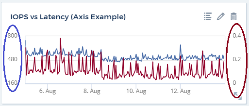
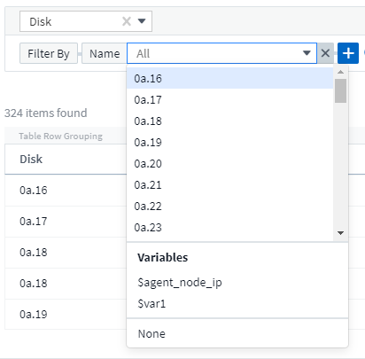
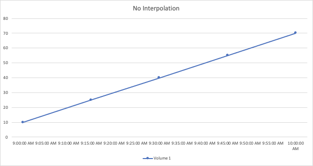

Richiedi modifiche alla documentazione
Richiedi modifiche alla documentazione Modifica questa pagina
Modifica questa pagina Scopri come collaborare
Scopri come collaborareCaratteristiche della dashboard
Collaboratori
- Nome widget
- Posizionamento e dimensioni widget
- Duplicazione di un widget
- Visualizzazione delle legende dei widget
- Trasformazione delle metriche
- Query e filtri dei widget della dashboard
- Raggruppamento e aggregazione
- Visualizzazione dei risultati in alto/in basso
- Raggruppamento in widget tabella
- Selettore intervallo di tempo della dashboard
- Ignorare l’ora del dashboard nei singoli widget
- Asse primario e secondario
- Espressioni nei widget
- Variabili
- Formattazione dei widget Gauge
- Formattazione del widget a valore singolo
- Formattazione dei widget della tabella
- Scelta dell’unità per la visualizzazione dei dati
- Modalità TV e aggiornamento automatico
- Gruppi di dashboard
- Fissa i tuoi dashboard preferiti
- Tema scuro
- Interpolazione del grafico a linee
Dashboard e widget consentono una grande flessibilità nella visualizzazione dei dati. Ecco alcuni concetti che ti aiuteranno a ottenere il massimo dalle dashboard personalizzate.
Nome widget
I widget vengono denominati automaticamente in base all’oggetto, alla metrica o all’attributo selezionato per la prima query del widget. Se si sceglie anche un raggruppamento per il widget, gli attributi "Raggruppa per" vengono inclusi nella naming automatica (metodo di aggregazione e metrica).

La selezione di un nuovo oggetto o attributo di raggruppamento aggiorna il nome automatico.
Se non si desidera utilizzare il nome automatico del widget, è sufficiente digitare un nuovo nome.
Posizionamento e dimensioni widget
Tutti i widget della dashboard possono essere posizionati e dimensionati in base alle esigenze di ogni dashboard.
Duplicazione di un widget
In modalità Dashboard Edit (Modifica dashboard), fare clic sul menu del widget e selezionare Duplicate (Duplica). Viene avviato l’editor dei widget, compilato con la configurazione originale del widget e con il suffisso "copy" nel nome del widget. È possibile apportare facilmente le modifiche necessarie e salvare il nuovo widget. Il widget viene posizionato nella parte inferiore della dashboard ed è possibile posizionarlo in base alle esigenze. Ricordarsi di salvare la dashboard una volta completate tutte le modifiche.

Visualizzazione delle legende dei widget
La maggior parte dei widget sui dashboard può essere visualizzata con o senza legende. Le legende nei widget possono essere attivate o disattivate su una dashboard in uno dei seguenti modi:
-
Quando viene visualizzata la dashboard, fare clic sul pulsante Opzioni sul widget e selezionare Mostra legende nel menu.
Man mano che i dati visualizzati nel widget cambiano, la legenda del widget viene aggiornata dinamicamente.
Quando vengono visualizzate le legende, se è possibile accedere alla pagina di destinazione della risorsa indicata dalla legenda, la legenda viene visualizzata come collegamento alla pagina della risorsa. Se la legenda visualizza "tutti", facendo clic sul collegamento viene visualizzata una pagina di query corrispondente alla prima query nel widget.
Trasformazione delle metriche
Cloud Insights offre diverse opzioni transform per determinate metriche nei widget (in particolare, quelle metriche chiamate "personalizzate" o metriche di integrazione, come Kubernetes, dati avanzati ONTAP, plug-in Telegraf, ecc.), consentendo di visualizzare i dati in diversi modi. Quando si aggiungono metriche trasformabili a un widget, viene visualizzato un menu a discesa che offre le seguenti scelte di trasformazione:
- Nessuno
-
I dati vengono visualizzati così come sono, senza alcuna manipolazione.
- Tasso
-
Valore corrente diviso per l’intervallo di tempo dall’osservazione precedente.
- Cumulativo
-
L’accumulo della somma dei valori precedenti e del valore corrente.
- Delta
-
La differenza tra il valore di osservazione precedente e il valore corrente.
- Delta rate (tasso delta)
-
Valore delta diviso per l’intervallo di tempo dall’osservazione precedente.
- Tasso cumulativo
-
Valore cumulativo diviso per l’intervallo di tempo dall’osservazione precedente.
Si noti che la trasformazione delle metriche non modifica i dati sottostanti, ma solo il modo in cui vengono visualizzati.
Query e filtri dei widget della dashboard
Query
Il widget Query in a Dashboard è un potente strumento per gestire la visualizzazione dei dati. Di seguito sono riportate alcune informazioni da tenere presenti sulle query dei widget.
Alcuni widget possono avere fino a cinque query. Ogni query traccia il proprio set di righe o grafici nel widget. L’impostazione di rollup, raggruppamento, risultati top/bottom, ecc. su una query non influisce su altre query per il widget.
È possibile fare clic sull’icona occhio per nascondere temporaneamente una query. La visualizzazione del widget si aggiorna automaticamente quando si nasconde o si visualizza una query. Ciò consente di controllare i dati visualizzati per le singole query durante la creazione del widget.
I seguenti tipi di widget possono avere più query:
-
Grafico ad area
-
Grafico ad area sovrapposta
-
Grafico a linee
-
Grafico di spline
-
Widget a valore singolo
I restanti tipi di widget possono avere una sola query:
-
Tabella
-
Grafico a barre
-
Grafico a caselle
-
Grafico a dispersione
Filtraggio nelle query dei widget della dashboard
Ecco alcune cose che puoi fare per ottenere il massimo dai tuoi filtri.
Filtro Exact Match
Se racchiudi una stringa di filtro tra virgolette doppie, Insight tratta tutto ciò che va dalla prima all’ultima quotazione come una corrispondenza esatta. Tutti i caratteri speciali o gli operatori all’interno delle virgolette saranno trattati come valori letterali. Ad esempio, il filtraggio per "*" restituirà risultati che sono un asterisco letterale; in questo caso, l’asterisco non verrà trattato come carattere jolly. Gli operatori E, O e NON verranno trattati come stringhe letterali se racchiusi tra virgolette doppie.
È possibile utilizzare filtri di corrispondenza precisi per trovare risorse specifiche, ad esempio il nome host. Se si desidera trovare solo il nome host 'marketing' ma si escludono 'marketing01', 'markketing-boston', ecc., è sufficiente racchiudere il nome "marketing" tra virgolette doppie.
Caratteri jolly ed espressioni
Quando si filtrano valori di testo o di elenco nelle query o nei widget della dashboard, quando si inizia a digitare viene visualizzata l’opzione per creare un filtro * con caratteri jolly* in base al testo corrente. Selezionando questa opzione verranno restituiti tutti i risultati che corrispondono all’espressione con caratteri jolly. È inoltre possibile creare espressioni utilizzando NOR o OPPURE, oppure selezionare l’opzione "None" (Nessuno) per filtrare i valori nulli nel campo.

I filtri basati su caratteri jolly o espressioni (ad esempio, NO, O "None", ecc.) vengono visualizzati in blu scuro nel campo del filtro. Gli elementi selezionati direttamente dall’elenco vengono visualizzati in blu chiaro.

Si noti che i caratteri jolly e il filtraggio delle espressioni funzionano con testo o elenchi, ma non con valori numerici, date o booleani.
Advanced Text Filtering con suggerimenti contestuali di tipo avanzato
Il filtraggio nelle query widget è contestuale; quando si seleziona uno o più valori di un filtro per un campo, gli altri filtri per tale query mostreranno i valori relativi a tale filtro. Ad esempio, quando si imposta un filtro per un oggetto Name specifico, il campo da filtrare per Model mostrerà solo i valori relativi a tale nome oggetto.
Il filtraggio contestuale si applica anche alle variabili della pagina della dashboard (solo attributi di testo o annotazioni). Quando si seleziona un valore filer per una variabile, qualsiasi altra variabile che utilizza oggetti correlati mostrerà solo i possibili valori di filtro in base al contesto di tali variabili correlate.
Nota: Solo i filtri di testo mostrano suggerimenti contestuali di tipo anticipato. Date (Data), Enum (elenco), ecc. non mostrano suggerimenti di tipo anticipato. Detto questo, è possibile _impostare un filtro su un campo Enum (ad esempio elenco) e fare in modo che altri campi di testo siano filtrati nel contesto. Ad esempio, selezionando un valore in un campo Enum come Data Center, gli altri filtri mostreranno solo i modelli/nomi in quel data center), ma non viceversa.
L’intervallo di tempo selezionato fornirà anche il contesto per i dati mostrati nei filtri.
Scelta delle unità di filtraggio
Mentre si digita un valore in un campo di filtro, è possibile selezionare le unità in cui visualizzare i valori nel grafico. Ad esempio, è possibile filtrare la capacità raw e scegliere di visualizzarla nel GIB di default oppure selezionare un altro formato, ad esempio TIB. Ciò è utile se si dispone di una serie di grafici sulla dashboard che mostrano i valori in TIB e si desidera che tutti i grafici mostrino valori coerenti.

Ulteriori miglioramenti del filtraggio
Per perfezionare ulteriormente i filtri, è possibile utilizzare quanto segue.
-
Un asterisco consente di cercare tutto. Ad esempio,
vol*rhel
visualizza tutte le risorse che iniziano con "vol" e terminano con "rhel".
-
Il punto interrogativo consente di cercare un numero specifico di caratteri. Ad esempio,
BOS-PRD??-S12
Visualizza BOS-PRD12-S12, BOS-PRD13-S12 e così via.
-
L’operatore OR consente di specificare più entità. Ad esempio,
FAS2240 OR CX600 OR FAS3270
trova più modelli di storage.
-
L’operatore NOT consente di escludere il testo dai risultati della ricerca. Ad esempio,
NOT EMC*
Trova tutto ciò che non inizia con "EMC". È possibile utilizzare
NOT *
per visualizzare i campi che non contengono valori.
Identificazione degli oggetti restituiti da query e filtri
Gli oggetti restituiti dalle query e dai filtri sono simili a quelli mostrati nella seguente illustrazione. Gli oggetti con 'tag' assegnati sono annotazioni, mentre gli oggetti senza tag sono contatori delle prestazioni o attributi degli oggetti.

Raggruppamento e aggregazione
Raggruppamento (rollio)
I dati visualizzati in un widget vengono raggruppati (talvolta chiamati arrotolati) a partire dai punti dati sottostanti raccolti durante l’acquisizione. Ad esempio, se nel tempo si dispone di un widget grafico a linee che mostra gli IOPS dello storage, potrebbe essere necessario visualizzare una riga separata per ciascuno dei data center, per un rapido confronto. È possibile scegliere di raggruppare questi dati in uno dei seguenti modi:
-
Average (Media): Visualizza ciascuna riga come media dei dati sottostanti.
-
Massimo: Visualizza ogni riga come massimo dei dati sottostanti.
-
Minimum (minimo): Visualizza ciascuna riga come Minimum dei dati sottostanti.
-
SUM: Visualizza ogni riga come somma dei dati sottostanti.
-
Count: Visualizza un count di oggetti che hanno riportato dati entro il periodo di tempo specificato. È possibile scegliere l' intera finestra temporale in base all’intervallo di tempo della dashboard (o l’intervallo di tempo del widget, se impostato per ignorare l’ora della dashboard) o una finestra temporale personalizzata selezionata.
Per impostare il metodo di raggruppamento, procedere come segue.
-
Nella query del widget, scegli un tipo di risorsa e una metrica (ad esempio, Storage) e una metrica (ad esempio Performance IOPS Total).
-
Per Group, scegliere un metodo di rolloup (ad esempio Average) e selezionare gli attributi o le metriche in base ai quali eseguire il rolloup dei dati (ad esempio, Data Center).
Il widget si aggiorna automaticamente e mostra i dati per ciascun data center.
Puoi anche scegliere di raggruppare tutti i dati sottostanti nel grafico o nella tabella. In questo caso, otterrai una singola riga per ogni query nel widget, che mostrerà la media, il minimo, il massimo, la somma o il conteggio della metrica o delle metriche scelte per tutte le risorse sottostanti.
Facendo clic sulla legenda per qualsiasi widget i cui dati sono raggruppati per "tutti", viene aperta una pagina di query che mostra i risultati della prima query utilizzata nel widget.
Se è stato impostato un filtro per la query, i dati vengono raggruppati in base ai dati filtrati.
Nota: Quando scegli di raggruppare un widget in un campo qualsiasi (ad esempio, Model), dovrai comunque filtrare in base a quel campo per visualizzare correttamente i dati di quel campo nel grafico o nella tabella.
Aggregare i dati
È possibile allineare ulteriormente i grafici delle serie temporali (linea, area, ecc.) aggregando i punti dati in bucket di minuti, ore o giorni prima che i dati vengano successivamente arrotolati in base all’attributo (se scelto). Puoi scegliere di aggregare i punti dati in base ai rispettivi Average, Maximum, Minimum, Sum o Count.
Un piccolo intervallo combinato con un lungo intervallo di tempo può determinare un "intervallo di aggregazione che ha determinato un numero eccessivo di punti dati". attenzione. Questo potrebbe essere visualizzato se si dispone di un intervallo limitato e si aumenta l’intervallo di tempo del dashboard a 7 giorni. In questo caso, Insight aumenterà temporaneamente l’intervallo di aggregazione fino a quando non si seleziona un intervallo di tempo inferiore.
Puoi anche aggregare i dati nel widget del grafico a barre e nel widget a valore singolo.
Per impostazione predefinita, la maggior parte dei contatori delle risorse viene aggregata alla media. Per impostazione predefinita, alcuni contatori vengono aggregati a Max, min o SUM. Ad esempio, per impostazione predefinita, gli errori di porta si aggregano a SUM, dove gli IOPS dello storage si aggregano a Average.
Visualizzazione dei risultati in alto/in basso
In un widget grafico, è possibile visualizzare i risultati Top o Bottom per i dati di cui è stato eseguito il rollup e scegliere il numero di risultati dall’elenco a discesa fornito. In un widget tabella, è possibile ordinare in base a qualsiasi colonna.
Widget grafico in alto/in basso
In un widget grafico, quando si sceglie di eseguire il rollup dei dati in base a un attributo specifico, è possibile visualizzare i risultati in alto N o in basso N. Nota: Non è possibile scegliere i risultati superiori o inferiori quando si sceglie di eseguire il rollup in base agli attributi all.
È possibile scegliere i risultati da visualizzare scegliendo Top o Bottom nel campo Show della query e selezionando un valore dall’elenco fornito.
Il widget tabella mostra le voci
In un widget tabella, è possibile selezionare il numero di risultati visualizzati nella tabella dei risultati. Non è possibile scegliere i risultati superiori o inferiori, in quanto la tabella consente di ordinare in ordine crescente o decrescente in base a qualsiasi colonna su richiesta.
È possibile scegliere il numero di risultati da visualizzare nella tabella della dashboard selezionando un valore dal campo Mostra voci della query.
Raggruppamento in widget tabella
I dati in un widget tabella possono essere raggruppati in base a qualsiasi attributo disponibile, consentendo di visualizzare una panoramica dei dati e di approfonirne i dettagli. Le metriche nella tabella vengono inserite per una facile visualizzazione in ogni riga compressa.
I widget tabella consentono di raggruppare i dati in base agli attributi impostati. Ad esempio, è possibile che la tabella mostri gli IOPS di storage totali raggruppati in base ai data center in cui risiedono tali storage. In alternativa, è possibile visualizzare una tabella di macchine virtuali raggruppate in base all’hypervisor che le ospita. Dall’elenco, è possibile espandere ciascun gruppo per visualizzare le risorse di quel gruppo.
Il raggruppamento è disponibile solo nel tipo di widget Tabella.
Esempio di raggruppamento (con spiegazione del rollup)
I widget delle tabelle consentono di raggruppare i dati per una visualizzazione più semplice.
In questo esempio, creeremo un widget di tabella che mostra tutte le macchine virtuali raggruppate per data center.
-
Creare o aprire una dashboard e aggiungere un widget Table.
-
Selezionare Virtual Machine come tipo di risorsa per questo widget.
-
Fare clic sul selettore di colonna e scegliere Nome hypervisor e IOPS - totale.
Tali colonne vengono ora visualizzate nella tabella.
-
Ignoriamo qualsiasi macchina virtuale senza IOPS e includiamo solo macchine virtuali con IOPS totali superiori a 1. Fare clic sul pulsante Filtra per [+] e selezionare IOPS - Total. Fare clic su any e nel campo from digitare 1. Lasciare vuoto il campo to. Premere Invio e fare clic sul campo del filtro per applicare il filtro.
La tabella mostra ora tutte le macchine virtuali con IOPS totali maggiori o uguali a 1. Si noti che non esiste alcun raggruppamento nella tabella. Vengono visualizzate tutte le macchine virtuali.
-
Fare clic sul pulsante Raggruppa per [+].
È possibile raggruppare in base a qualsiasi attributo o annotazione visualizzata. Scegliere all per visualizzare tutte le macchine virtuali in un singolo gruppo.
Qualsiasi intestazione di colonna per una metrica delle performance visualizza un menu a tre punti contenente un’opzione Roll-up. Il metodo di rolloup predefinito è Average. Ciò significa che il numero visualizzato per il gruppo corrisponde alla media di tutti gli IOPS totali riportati per ciascuna macchina virtuale all’interno del gruppo. Puoi scegliere di eseguire il rollup di questa colonna per Average, Sum, Minimum o Maximum. È possibile eseguire il rollup singolo di qualsiasi colonna visualizzata contenente metriche delle performance.

-
Fare clic su All e selezionare Hypervisor name.
L’elenco delle macchine virtuali è ora raggruppato in base all’hypervisor. È possibile espandere ciascun hypervisor per visualizzare le macchine virtuali ospitate dall’IT.
-
Fare clic su Save (Salva) per salvare la tabella nella dashboard. È possibile ridimensionare o spostare il widget come desiderato.
-
Fare clic su Save (Salva) per salvare la dashboard.
Rolloup dei dati sulle performance
Se si include una colonna per i dati delle performance (ad esempio, IOPS - Total) in un widget di tabella, quando si sceglie di raggruppare i dati è possibile scegliere un metodo di rolloup per tale colonna. Il metodo di rolloup predefinito consiste nella visualizzazione della media (AVG) dei dati sottostanti nella riga del gruppo. È inoltre possibile scegliere di visualizzare la somma, il minimo o il massimo dei dati.
Selettore intervallo di tempo della dashboard
È possibile selezionare l’intervallo di tempo per i dati della dashboard. Solo i dati relativi all’intervallo di tempo selezionato verranno visualizzati nei widget della dashboard. È possibile scegliere tra i seguenti intervalli di tempo:
-
Ultimi 15 minuti
-
Ultimi 30 minuti
-
Ultimi 60 minuti
-
Ultime 2 ore
-
Ultime 3 ore (impostazione predefinita)
-
Ultime 6 ore
-
Ultime 12 ore
-
Ultime 24 ore
-
Ultimi 2 giorni
-
Ultimi 3 giorni
-
Ultimi 7 giorni
-
Ultimi 30 giorni
-
Intervallo di tempo personalizzato
L’intervallo di tempo personalizzato consente di selezionare fino a 31 giorni consecutivi. È inoltre possibile impostare l’ora di inizio e l’ora di fine del giorno per questo intervallo. L’ora di inizio predefinita è 12:00 AM nel primo giorno selezionato e l’ora di fine predefinita è 11:59 PM nell’ultimo giorno selezionato. Fare clic su Apply (Applica) per applicare l’intervallo di tempo personalizzato alla dashboard.
Ignorare l’ora del dashboard nei singoli widget
È possibile ignorare l’impostazione dell’intervallo di tempo della dashboard principale nei singoli widget. Questi widget visualizzano i dati in base al periodo di tempo impostato, non al periodo di tempo della dashboard.
Per ignorare l’ora del dashboard e forzare un widget a utilizzare il proprio intervallo di tempo, nella modalità di modifica del widget impostare Ignora ora ora ora dashboard su on (selezionare la casella) e selezionare un intervallo di tempo per il widget. Salva il widget nella dashboard.
Il widget visualizza i dati in base all’intervallo di tempo impostato, indipendentemente dall’intervallo di tempo selezionato sulla dashboard stessa.
L’intervallo di tempo impostato per un widget non influisce sugli altri widget della dashboard.
Asse primario e secondario
Metriche diverse utilizzano unità di misura diverse per i dati che riportano in un grafico. Ad esempio, quando si guardano gli IOPS, l’unità di misura è il numero di operazioni di i/o al secondo di tempo (io/s), mentre la latenza è puramente una misura di tempo (millisecondi, microsecondi, secondi, ecc.). Quando si inseriscono entrambe le metriche in un singolo grafico utilizzando un singolo set di valori a per l’asse Y, i numeri di latenza (in genere una manciata di millisecondi) vengono inseriti nella stessa scala con gli IOPS (in genere numerati in migliaia) e la riga di latenza viene persa in quella scala.
Tuttavia, è possibile inserire entrambi i set di dati in un singolo grafico significativo, impostando un’unità di misura sull’asse Y primario (lato sinistro) e l’altra unità di misura sull’asse Y secondario (lato destro). Ogni metrica viene tracciata in base alla propria scala.
Questo esempio illustra il concetto di assi primari e secondari in un widget grafico.
-
Creare o aprire una dashboard. Aggiungi un grafico a linee, un grafico a spline, un grafico ad area o un widget grafico ad area sovrapposta alla dashboard.
-
Selezionare un tipo di risorsa (ad esempio Storage) e scegliere IOPS - Total per la prima metrica. Impostare i filtri desiderati e scegliere un metodo di roll-up, se desiderato.
La riga IOPS viene visualizzata sul grafico, con la relativa scala a sinistra.
-
Fare clic su [+Query] per aggiungere una seconda riga al grafico. Per questa riga, scegliere latenza - totale per la metrica.
Notare che la riga viene visualizzata piatta nella parte inferiore del grafico. Questo perché viene disegnato alla stessa scala della linea IOPS.
-
Nella query di latenza, selezionare asse Y: Secondario.
La linea di latenza viene ora tracciata in base alla propria scala, che viene visualizzata sul lato destro del grafico.

Espressioni nei widget
In una dashboard, qualsiasi widget Time Series (linea, spline, area, area impilata), valore singolo, O Gauge Widget consente di creare espressioni a partire da metriche scelte e di visualizzare il risultato di tali espressioni in un singolo grafico. Gli esempi seguenti utilizzano espressioni per risolvere problemi specifici. Nel primo esempio, vogliamo mostrare gli IOPS in lettura come percentuale degli IOPS totali per tutte le risorse di storage nel nostro ambiente. Il secondo esempio fornisce visibilità sugli IOPS "di sistema" o "overhead" che si verificano nel tuo ambiente, ovvero gli IOPS che non sono direttamente derivanti dalla lettura o dalla scrittura dei dati.
È possibile utilizzare le variabili nelle espressioni (ad esempio, €var1 * 100)
Esempio di espressioni: Percentuale IOPS di lettura
In questo esempio, vogliamo mostrare gli IOPS in lettura come percentuale degli IOPS totali. Si può pensare a questo come alla seguente formula:
Read Percentage = (Read IOPS / Total IOPS) x 100 Questi dati possono essere visualizzati in un grafico a linee sulla dashboard. A tale scopo, attenersi alla seguente procedura:
-
Creare una nuova dashboard o aprirla in modalità di modifica.
-
Aggiungere un widget alla dashboard. Scegliere Area chart.
Il widget si apre in modalità di modifica. Per impostazione predefinita, viene visualizzata una query che mostra IOPS - Total per le risorse Storage. Se lo si desidera, selezionare un tipo di risorsa diverso.
-
Fare clic sul collegamento Converti in espressione a destra.
La query corrente viene convertita in modalità espressione. Non è possibile modificare il tipo di risorsa in modalità espressione. In modalità espressione, il collegamento diventa Ripristina query. Fare clic su questa opzione per tornare alla modalità Query in qualsiasi momento. Tenere presente che il passaggio da una modalità all’altra ripristinerà i valori predefiniti dei campi.
Per il momento, rimanere in modalità Expression.
-
La metrica IOPS - Total si trova ora nel campo della variabile alfabetica "a". Nel campo della variabile "b", fare clic su Select e scegliere IOPS - Read.
È possibile aggiungere fino a un totale di cinque variabili alfabetiche per l’espressione facendo clic sul pulsante + dopo i campi delle variabili. Per il nostro esempio di percentuale di lettura, abbiamo bisogno solo di IOPS totali ("a") e IOPS di lettura ("b").
-
Nel campo espressione, utilizzare le lettere corrispondenti a ciascuna variabile per creare l’espressione. Sappiamo che percentuale di lettura = (IOPS di lettura / IOPS totali) x 100, quindi scriveremmo questa espressione come:
(b / a) * 100 . Il campo *Label* identifica l'espressione. Modificare l'etichetta in "percentuale di lettura", o qualcosa di altrettanto significativo per te. . Impostare il campo *unità* su "%" o "percentuale".
Il grafico mostra la percentuale di lettura IOPS nel tempo per i dispositivi di storage selezionati. Se lo si desidera, è possibile impostare un filtro o scegliere un metodo di rollup diverso. Tenere presente che se si seleziona SUM come metodo di rollup, tutti i valori percentuali vengono sommati, che potenzialmente possono superare il 100%.
-
Fare clic su Save (Salva) per salvare il grafico nella dashboard.
È inoltre possibile utilizzare espressioni nei widget grafico a linee, grafico a spline o area sovrappurata.
Esempio di espressioni: I/o "di sistema"
Esempio 2: Tra le metriche raccolte dalle origini dati vi sono IOPS totali, di lettura, scrittura e. Tuttavia, il numero totale di IOPS segnalati da un’origine dati a volte include IOPS "di sistema", che sono operazioni io che non sono parte diretta della lettura o scrittura dei dati. Questo i/o di sistema può anche essere considerato come un i/o "overhead", necessario per il corretto funzionamento del sistema ma non direttamente correlato alle operazioni sui dati.
Per visualizzare questi i/o di sistema, è possibile sottrarre gli IOPS di lettura e scrittura dai IOPS totali riportati dall’acquisizione. La formula potrebbe essere simile alla seguente:
System IOPS = Total IOPS - (Read IOPS + Write IOPS) Questi dati possono quindi essere visualizzati in un grafico a linee sulla dashboard. A tale scopo, attenersi alla seguente procedura:
-
Creare una nuova dashboard o aprirla in modalità di modifica.
-
Aggiungere un widget alla dashboard. Scegliere Line chart.
Il widget si apre in modalità di modifica. Per impostazione predefinita, viene visualizzata una query che mostra IOPS - Total per le risorse Storage. Se lo si desidera, selezionare un tipo di risorsa diverso.
-
Nel campo Roll Up, selezionare SUM per All.
Il grafico visualizza una riga che mostra la somma degli IOPS totali.
-
Fare clic sull’icona Duplica questa query
 per creare una copia della query.
per creare una copia della query.Un duplicato della query viene aggiunto sotto l’originale.
-
Nella seconda query, fare clic sul pulsante Converti in espressione.
La query corrente viene convertita in modalità espressione. Fare clic su Ripristina query se si desidera tornare alla modalità Query in qualsiasi momento. Tenere presente che il passaggio da una modalità all’altra ripristinerà i valori predefiniti dei campi.
Per il momento, rimanere in modalità Expression.
-
La metrica IOPS - Total si trova ora nel campo della variabile alfabetica "a". Fare clic su IOPS - Total e modificarlo in IOPS - Read.
-
Nel campo della variabile "b", fare clic su Select e scegliere IOPS - Write.
-
Nel campo espressione, utilizzare le lettere corrispondenti a ciascuna variabile per creare l’espressione. Scriveremmo la nostra espressione semplicemente come:
a + b
Nella sezione Display (visualizzazione), selezionare Area chart per questa espressione.
-
Il campo Label identifica l’espressione. Modificare l’etichetta in "System IOPS" (IOPS di sistema) o in qualcosa di altrettanto significativo per l’utente.
Il grafico mostra gli IOPS totali come grafico a linee, con un grafico a aree che mostra la combinazione di IOPS di lettura e scrittura sottostante. Il divario tra i due indica gli IOPS che non sono direttamente correlati alle operazioni di lettura o scrittura dei dati. Questi sono i tuoi IOPS di "sistema".
-
Fare clic su Save (Salva) per salvare il grafico nella dashboard.
Per utilizzare una variabile in un’espressione, è sufficiente digitare il nome della variabile, ad esempio €var1 * 100. Nelle espressioni possono essere utilizzate solo variabili numeriche.
Variabili
Le variabili consentono di modificare i dati visualizzati in alcuni o tutti i widget di una dashboard contemporaneamente. Impostando uno o più widget per l’utilizzo di una variabile comune, le modifiche apportate in un unico punto causano l’aggiornamento automatico dei dati visualizzati in ciascun widget.
Le variabili della dashboard sono disponibili in diversi tipi, possono essere utilizzate in diversi campi e devono seguire le regole per la denominazione. Questi concetti sono spiegati qui.
Tipi di variabili
Una variabile può essere di uno dei seguenti tipi:
-
Attribute: Utilizza gli attributi o le metriche di un oggetto per filtrare
-
Annotation (Annotazione): Utilizzare un predefinito "Annotazione" per filtrare i dati del widget.
-
Text: Stringa alfanumerica.
-
Numerico: Un valore numerico. Utilizzare da solo o come valore "da" o "a", a seconda del campo del widget.
-
Booleano: Utilizzare per i campi con valori vero/Falso, Sì/No, ecc. Per la variabile booleana, le opzioni sono Yes (Sì), No, None (Nessuno), Any (qualsiasi).
-
Data: Un valore di data. Utilizzare come valore "da" o "a", a seconda della configurazione del widget.

Variabili di attributo
La selezione di una variabile di tipo di attributo consente di filtrare i dati widget contenenti il valore o i valori di attributo specificati. L’esempio riportato di seguito mostra un widget di riga che mostra i trend della memoria libera per i nodi dell’agente. È stata creata una variabile per gli IP del nodo dell’agente, attualmente impostata per visualizzare tutti gli IP:

Tuttavia, se si desidera visualizzare temporaneamente solo i nodi nelle singole subnet dell’ambiente, è possibile impostare o modificare la variabile in un IP o IP del nodo agente specifico. Qui vengono visualizzati solo i nodi sulla subnet "123":

È inoltre possibile impostare una variabile per filtrare gli oggetti all con un attributo particolare indipendentemente dal tipo di oggetto, ad esempio gli oggetti con un attributo di "vendor", specificando *.vendor nel campo della variabile. Non è necessario digitare "*."; se si seleziona l’opzione con il carattere jolly, Cloud Insights lo fornirà.

Quando si seleziona l’elenco a discesa delle scelte per il valore della variabile, i risultati vengono filtrati in modo da visualizzare solo i vendor disponibili in base agli oggetti presenti nella dashboard.

Se modifichi un widget sulla dashboard in cui il filtro degli attributi è rilevante (ovvero, gli oggetti del widget contengono un attributo *.vendor), il filtro degli attributi viene applicato automaticamente.

L’applicazione delle variabili è semplice quanto la modifica dei dati degli attributi scelti.
Variabili di annotazione
La scelta di una variabile di annotazione consente di filtrare gli oggetti associati a tale annotazione, ad esempio quelli appartenenti allo stesso data center.

Text, Number, Date o Boolean Variable
È possibile creare variabili generiche non associate a un particolare attributo selezionando un tipo di variabile Text, Number, Boolean o Date. Una volta creata la variabile, è possibile selezionarla in un campo di filtro widget. Quando si imposta un filtro in un widget, oltre ai valori specifici che è possibile selezionare per il filtro, tutte le variabili create per la dashboard vengono visualizzate nell’elenco, raggruppate nella sezione "variabili" dell’elenco a discesa e hanno nomi che iniziano con "". La scelta di una variabile in questo filtro consente di cercare i valori immessi nel campo delle variabili della dashboard stessa. Tutti i widget che utilizzano tale variabile in un filtro verranno aggiornati dinamicamente.

Ambito del filtro variabile
Quando si aggiunge una variabile Annotation o Attribute alla dashboard, la variabile può essere applicata a tutti i widget della dashboard, il che significa che tutti i widget della dashboard visualizzano i risultati filtrati in base al valore impostato nella variabile.

Si noti che solo le variabili di attributo e annotazione possono essere filtrate automaticamente in questo modo. Le variabili non-Annotation o -attribute non possono essere filtrate automaticamente. Ciascun widget deve essere configurato per utilizzare variabili di questi tipi.
Per disattivare il filtraggio automatico in modo che la variabile si applichi solo ai widget in cui è stata impostata, fare clic sul dispositivo di scorrimento "Filter automatically" (filtro automatico) per disattivarla.
Per impostare una variabile in un singolo widget, aprire il widget in modalità di modifica e selezionare l’annotazione o l’attributo specifico nel campo Filtra per. Con una variabile Annotation, è possibile selezionare uno o più valori specifici o il nome della variabile (indicato dal simbolo "" iniziale) per consentire la digitazione della variabile a livello di dashboard. Lo stesso vale per le variabili di attributo. Solo i widget per i quali si imposta la variabile mostreranno i risultati filtrati.
Il filtraggio delle variabili è contestuale; quando si seleziona un valore di filtro o valori per una variabile, le altre variabili nella pagina mostreranno solo i valori relativi a tale filtro. Ad esempio, quando si imposta un filtro variabile su uno storage specifico Model, qualsiasi variabile impostata per filtrare lo storage Name mostrerà solo i valori relativi a quel modello.
Per utilizzare una variabile in un’espressione, è sufficiente digitare il nome della variabile come parte dell’espressione, ad esempio €var1 * 100. Nelle espressioni possono essere utilizzate solo variabili numeriche. Non è possibile utilizzare annotazioni numeriche o variabili di attributo nelle espressioni.
Il filtraggio delle variabili è contestuale; quando si seleziona un valore di filtro o valori per una variabile, le altre variabili nella pagina mostreranno solo i valori relativi a tale filtro. Ad esempio, quando si imposta un filtro variabile su uno storage specifico Model, qualsiasi variabile impostata per filtrare lo storage Name mostrerà solo i valori relativi a quel modello.
Naming variabile
Nomi delle variabili:
-
Deve includere solo le lettere a-z, le cifre da 0 a 9, il punto (.), il carattere di sottolineatura (_) e lo spazio ( ).
-
Non può contenere più di 20 caratteri.
-
Sono sensibili al maiuscolo/minuscolo: Il nome della città e il nome della città sono variabili diverse.
-
Non può essere uguale al nome di una variabile esistente.
-
Non può essere vuoto.
Formattazione dei widget Gauge
I widget Solid e Bullet Gauge consentono di impostare le soglie per i livelli Warning e/o critical, fornendo una chiara rappresentazione dei dati specificati.

Per impostare la formattazione per questi widget, attenersi alla seguente procedura:
-
Scegliere se si desidera evidenziare valori superiori a (>) o inferiori a (<) soglie. In questo esempio, evidenzieremo valori superiori a (>) i livelli di soglia.
-
Scegliere un valore per la soglia "Avviso". Quando il widget visualizza valori superiori a questo livello, l’indicatore viene visualizzato in arancione.
-
Scegliere un valore per la soglia "critica". Valori superiori a questo livello indicheranno la visualizzazione dell’indicatore in rosso.
È possibile scegliere un valore minimo e massimo per l’indicatore. I valori inferiori al minimo non visualizzano l’indicatore. I valori superiori al valore massimo visualizzano un indicatore completo. Se non si scelgono i valori minimi o massimi, il widget seleziona i valori minimi e massimi ottimali in base al valore del widget.


Formattazione del widget a valore singolo
Nel widget valore singolo, oltre all’impostazione delle soglie di avviso (arancione) e critico (rosso), è possibile scegliere di visualizzare i valori "in Range" (sotto il livello di avviso) con sfondo verde o bianco.

Facendo clic sul collegamento in un widget a valore singolo o in un widget indicatore viene visualizzata una pagina di query corrispondente alla prima query nel widget.
Formattazione dei widget della tabella
Come per i widget a valore singolo e per gli indicatori, è possibile impostare la formattazione condizionale nei widget delle tabelle, consentendo di evidenziare i dati con colori e/o icone speciali.

|
La formattazione condizionale non è attualmente disponibile nell’edizione federale di Cloud Insights. |
La formattazione condizionale consente di impostare ed evidenziare le soglie di livello di avviso e critico nei widget delle tabelle, offrendo visibilità istantanea agli outlier e ai punti dati eccezionali.

La formattazione condizionale viene impostata separatamente per ogni colonna di una tabella. Ad esempio, è possibile scegliere un set di soglie per una colonna di capacità e un altro set per una colonna di throughput.
Se si modifica la visualizzazione unità per una colonna, la formattazione condizionale rimane e riflette la modifica dei valori. Le immagini riportate di seguito mostrano la stessa formattazione condizionale anche se il display è diverso.


È possibile scegliere se visualizzare la formattazione delle condizioni come colore, icone o entrambi.
Scelta dell’unità per la visualizzazione dei dati
La maggior parte dei widget di una dashboard consente di specificare le unità in cui visualizzare i valori, ad esempio Megabyte, migliaia, percentuale, millisecondi (ms), ecc. In molti casi, Cloud Insights conosce il formato migliore per i dati acquisiti. Nei casi in cui non si conosce il formato migliore, è possibile impostare il formato desiderato.
Nell’esempio riportato di seguito, i dati selezionati per il widget sono in byte (l’unità dati IEC di base: Vedere la tabella seguente), quindi l’unità base viene selezionata automaticamente come 'byte (B)'. Tuttavia, i valori dei dati sono abbastanza grandi da essere presentati come gibytes (GiB), quindi Cloud Insights per impostazione predefinita formatta automaticamente i valori come GiB. L’asse Y del grafico mostra "GiB" come unità di visualizzazione e tutti i valori sono visualizzati in termini di unità.

Se si desidera visualizzare il grafico in un’unità diversa, è possibile scegliere un altro formato in cui visualizzare i valori. Poiché l’unità di base in questo esempio è byte, è possibile scegliere tra i formati supportati "byte-based": Bit (b), byte (B), kibibyte (KiB), mebibyte (MiB), gibibyte (GiB). L’etichetta e i valori dell’asse Y cambiano in base al formato scelto.

Nei casi in cui l’unità base non sia nota, è possibile assegnare un’unità tra "unità disponibili"oppure digitare il proprio. Una volta assegnata un’unità base, è possibile scegliere di visualizzare i dati in uno dei formati supportati appropriati.

Per cancellare le impostazioni e ricominciare, fare clic su Reset Defaults (Ripristina impostazioni predefinite).
Una parola su Auto-Format
La maggior parte delle metriche viene riportata dai data collezionisti nell’unità più piccola, ad esempio come un numero intero, ad esempio 1,234,567,890 byte. Per impostazione predefinita, Cloud Insights formatterà automaticamente il valore per la visualizzazione più leggibile. Ad esempio, un valore dei dati di 1,234,567,890 byte viene automaticamente formattato in 1.23 Gibibytes. È possibile scegliere di visualizzarlo in un altro formato, ad esempio Mebibytes. Il valore viene visualizzato di conseguenza.
|
|
Cloud Insights utilizza gli standard di denominazione dei numeri in inglese americano. Il "miliardo" americano equivale a "migliaia di milioni". |
Widget con query multiple
Se si dispone di un widget Time-series (ad esempio linea, spline, area, area sovrapposta) che ha due query in cui entrambe sono tracciate l’asse Y primario, l’unità base non viene visualizzata nella parte superiore dell’asse Y. Tuttavia, se il widget dispone di una query sull’asse Y primario e di una query sull’asse Y secondario, vengono visualizzate le unità di base per ciascuno di essi.

Se il widget dispone di tre o più query, le unità di base non vengono visualizzate sull’asse Y.
Unità disponibili
La seguente tabella mostra tutte le unità disponibili per categoria.
Categoria |
Unità |
Valuta |
dollaro centesimo |
Dati (IEC) |
bit byte kibibyte mebibyte gibibyte tebibyte pebibyte exbibyte |
Data arate (IEC) |
bit/sec byte/sec kibibyte/sec mebibyte/sec gibibyte/sec tebibyte/sec pebibyte/sec |
Dati (metrico) |
kilobyte megabyte gigabyte terabyte petabyte exabyte |
Datarato (metrico) |
kilobyte/sec megabyte/sec gigabyte/sec terabyte/sec petabyte/sec exabyte/sec |
IEC |
kibi mebi tebi pebi exbi |
Decimale |
migliaia di miliardi di miliardi di miliardi |
Percentuale |
percentuale |
Ora |
nanocondo microsecondo millisecondo minuto ora |
Temperatura |
celsius fahrenheit |
Frequenza |
hertz kilohertz megahertz gigahertz |
CPU |
nanocores microcore millicores core kilocores megacores gigacores teracores petacores exacores |
Throughput |
I/o Ops/sec Ops/sec Requests/sec Requests/sec Reads/sec Scritture/sec Ops/min Reads/min Scritture/min |
Modalità TV e aggiornamento automatico
I dati nei widget su Dashboard e Asset Landing Pages si aggiornano automaticamente in base a un intervallo di refresh determinato dal Dashboard Time Range selezionato (o intervallo di tempo widget, se impostato per sostituire l’ora del dashboard). L’intervallo di refresh si basa sul fatto che il widget sia costituito da serie temporali (linea, spline, area, grafico a aree sovrapposte) o da serie non temporali (tutti gli altri grafici).
Intervallo di tempo della dashboard |
Intervallo di aggiornamento Time-Series |
Intervallo di aggiornamento non Time-Series |
Ultimi 15 minuti |
10 secondi |
1 minuto |
Ultimi 30 minuti |
15 secondi |
1 minuto |
Ultimi 60 minuti |
15 secondi |
1 minuto |
Ultime 2 ore |
30 secondi |
5 minuti |
Ultime 3 ore |
30 secondi |
5 minuti |
Ultime 6 ore |
1 minuto |
5 minuti |
Ultime 12 ore |
5 minuti |
10 minuti |
Ultime 24 ore |
5 minuti |
10 minuti |
Ultimi 2 giorni |
10 minuti |
10 minuti |
Ultimi 3 giorni |
15 minuti |
15 minuti |
Ultimi 7 giorni |
1 ora |
1 ora |
Ultimi 30 giorni |
2 ore |
2 ore |
Ciascun widget visualizza l’intervallo di aggiornamento automatico nell’angolo superiore destro del widget.
L’aggiornamento automatico non è disponibile per l’intervallo di tempo della dashboard personalizzata.
Se combinato con la modalità TV, l’aggiornamento automatico consente la visualizzazione quasi in tempo reale dei dati su una dashboard o una pagina di risorse. La modalità TV offre una visualizzazione semplice; il menu di navigazione è nascosto, offrendo una maggiore capacità di visualizzazione dei dati, così come il pulsante Edit. La modalità TV ignora i timeout Cloud Insights tipici, lasciando il display attivo fino a quando non viene disconnesso manualmente o automaticamente dai protocolli di sicurezza autorizzati.
|
|
Poiché NetApp Cloud Central ha un timeout di accesso utente di 7 giorni, Cloud Insights deve disconnettersi anche con quell’evento. Puoi semplicemente effettuare nuovamente l’accesso e la dashboard continuerà a essere visualizzata. |
-
Per attivare la modalità TV, fare clic su
 pulsante.
pulsante. -
Per disattivare la modalità TV, fare clic sul pulsante Exit in alto a sinistra sullo schermo.

È possibile sospendere temporaneamente l’aggiornamento automatico facendo clic sul pulsante Pause (Pausa) nell’angolo in alto a destra. Durante la pausa, il campo intervallo di tempo della dashboard visualizza l’intervallo di tempo attivo dei dati in pausa. I dati sono ancora in fase di acquisizione e aggiornamento mentre l’aggiornamento automatico è in pausa. Fare clic sul pulsante Riprendi per continuare l’aggiornamento automatico dei dati.

Gruppi di dashboard
Il raggruppamento consente di visualizzare e gestire dashboard correlati. Ad esempio, è possibile disporre di un gruppo di dashboard dedicato allo storage nel proprio ambiente. I gruppi di dashboard sono gestiti nella pagina Dashboard > Mostra tutti i dashboard.

Per impostazione predefinita, vengono visualizzati due gruppi:
-
Tutti i dashboard elenca tutti i dashboard creati, indipendentemente dal proprietario.
-
My Dashboard elenca solo i dashboard creati dall’utente corrente.
Il numero di dashboard contenuti in ciascun gruppo viene visualizzato accanto al nome del gruppo.
Per creare un nuovo gruppo, fare clic sul pulsante "+" Create New Dashboard Group (Crea nuovo gruppo dashboard). Immettere un nome per il gruppo e fare clic su Create Group (Crea gruppo). Viene creato un gruppo vuoto con tale nome.
Per aggiungere dashboard al gruppo, fare clic sul gruppo All Dashboards per visualizzare tutti i dashboard dell’ambiente, quindi fare clic su My Dashboards se si desidera visualizzare solo i dashboard in uso ed eseguire una delle seguenti operazioni:
-
Per aggiungere una singola dashboard, fare clic sul menu a destra della dashboard e selezionare Aggiungi al gruppo.
-
Per aggiungere più dashboard a un gruppo, selezionarle facendo clic sulla casella di controllo accanto a ciascuna dashboard, quindi fare clic sul pulsante azioni in blocco e selezionare Aggiungi al gruppo.
Rimuovere i dashboard dal gruppo corrente nello stesso modo selezionando Remove from Group. Non è possibile rimuovere i dashboard dal gruppo tutti i dashboard o i miei dashboard.
|
|
La rimozione di una dashboard da un gruppo non elimina la dashboard da Cloud Insights. Per rimuovere completamente una dashboard, selezionarla e fare clic su Delete. In questo modo viene rimosso da tutti i gruppi a cui apparteneva e non è più disponibile per nessun utente. |
Fissa i tuoi dashboard preferiti
È possibile gestire ulteriormente le dashboard inserendo quelle preferite nella parte superiore dell’elenco della dashboard. Per fissare una dashboard, fare clic sul pulsante di identificazione visualizzato quando si passa il puntatore del mouse su una dashboard in un elenco qualsiasi.
Pin/unpin della dashboard è una preferenza utente individuale e indipendente dal gruppo (o dai gruppi) a cui appartiene la dashboard.

Tema scuro
È possibile scegliere di visualizzare Cloud Insights utilizzando un tema chiaro (impostazione predefinita), che visualizza la maggior parte delle schermate utilizzando uno sfondo chiaro con testo scuro, o un tema scuro che visualizza la maggior parte delle schermate utilizzando uno sfondo scuro con testo chiaro.
Per passare da un tema chiaro a uno scuro e viceversa, fare clic sul pulsante Username (Nome utente) nell’angolo superiore destro dello schermo e scegliere il tema desiderato.

Vista Dashboard tema scuro:
Vista dashboard tema luce:
|
|
Alcune aree dello schermo, ad esempio alcuni grafici di widget, continuano a mostrare sfondi chiari anche quando vengono visualizzati in un tema scuro. |
Interpolazione del grafico a linee
I diversi data raccoglitori spesso eseguono il polling dei dati a intervalli diversi. Ad esempio, il data collector A può eseguire il polling ogni 15 minuti, mentre il data collector B esegue il polling ogni cinque minuti. Quando un widget di un grafico a linee (anche diagrammi di spline, area e area sovrapposta) aggrega questi dati da più raccolte di dati in una singola riga (ad esempio, quando il widget raggruppa per "tutti"), Inoltre, aggiornando la linea ogni cinque minuti, i dati del raccoglitore B possono essere mostrati con precisione mentre i dati del raccoglitore A possono presentare lacune, influenzando così l’aggregato fino a quando il raccoglitore A esegue di nuovo il polling.
Per ridurre questo problema, Cloud Insights interpola i dati durante l’aggregazione, utilizzando i punti dati circostanti per fare una "ipotesi migliore" sui dati fino a quando i data collezioner non eseguono nuovamente il polling. Puoi sempre visualizzare i dati degli oggetti di ciascun data collector individualmente regolando il raggruppamento del widget.
Metodi di interpolazione
Quando si crea o si modifica un grafico a linee (o un grafico a spline, area o area sovrapposta), è possibile impostare il metodo di interpolazione su uno dei tre tipi. Nella sezione "Raggruppa per", scegliere l’interpolazione desiderata.

-
Nessuno: Non fare nulla, ad esempio non generare punti intermedi.

-
Stair: Viene generato un punto dal valore del punto precedente. In linea retta, questo viene visualizzato come un tipico layout "scala".

-
Lineare: Viene generato un punto come valore tra due punti di connessione. Genera una linea che assomiglia alla linea che collega i due punti, ma con punti dati aggiuntivi (interpolati).